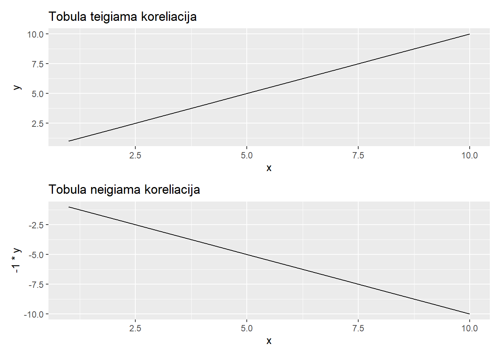

Pearson koreliacijos koeficientas
Pearson’o koreliacijos koeficientą labai nesudėtinga paaiškinti: įsivaizduokime tiesę, kurią nubrėžtume su funkcija y = f(x):
Warning: package 'ggplot2' was built under R version 4.2.3Warning: package 'patchwork' was built under R version 4.2.3
Nelendant į matematines detales, kuo arčiau mūsų matavimai yra arčiau šios linijos, tuo koreliacijos koeficientas bus didesnis. Priešingai, jeigu taškai yra arčiau linijos, kuomet y reikšmės mažėja didėjant x reikšmėms, tuo koreliacijos koeficientas bus mažesnis. Koreliacijos koeficientas 1,0 ir -1,0 yra šios linijos.
Pajutimui, taip atrodo duomenys su skirtingais koreliacijos koeficientais1:

Apskaičiuoti koreliacijos koeficientą galima ir su R, ir su Excel:
R cor() funkcija leidžia lyginti kelis stulpelis iškart, o cor.test() taip pat pateikia statistinio testo rezultatus.
Rodyti kodą
cor.test(iris$Sepal.Length, iris$Sepal.Width)
Pearson's product-moment correlation
data: iris$Sepal.Length and iris$Sepal.Width
t = -1.4403, df = 148, p-value = 0.1519
alternative hypothesis: true correlation is not equal to 0
95 percent confidence interval:
-0.27269325 0.04351158
sample estimates:
cor
-0.1175698 Statistinio testo rezultatai šiuo atveju nėra visiškai sąžiningi, nes tai yra tiesinės regresijos rezultatai. Juos laisvai galima raportuoti, bet tai parodo, jog tikriausiai norime tiesiog atlikti tiesinę regresiją.
Excel grąžina tik patį koreliacijos koeficientą, bet su XLMiner Toolpak galima lyginti kelis stulpelius vienu metu!

Spearman koreliacijos koeficientas
Pearson’o koreliacijos pagrindinis trūkumas - jis tinkamas tiesiniams ryšiams. Kitaip tariant, koreliacijos koeficientas nusako, kaip gerai mūsų dviejų kintamųjų matavimai nugula aplinkui tobulą tiesę (r = 1.0). Tais atvejais, kai ryšys nėra tiesiškas, pavyzdžiui, truputis pastangų rengiantis egzaminui turės didelę įtaką pažymiui (tarkim, nuo 4 iki 7), bet papildomos pastangos padidins pažymį tik truputį (nuo 7 iki 8), Pearson’o koreliacijos koeficientas nepateiks teisingo įverčio. Tokiu atveju turime naudoti Spearman’o koreliaciją.
Naudodami koreliacijas tikriausiai vengiame gudrių statistinių modelių, todėl šiuo atveju Spearman koreliacija yra labai analogiška Wilcoxon dviejų imčių testui arba Kruskal-Wallis testui. Pirma, mūsų duomenų rinkinys yra paverčiamas į rangines reikšmes, o tada - skaičiuojamas gautų rangų koreliacijos koeficientas.
Rodyti kodą
cor.test(iris$Sepal.Length, iris$Sepal.Width, method = "spearman")Warning in cor.test.default(iris$Sepal.Length, iris$Sepal.Width, method =
"spearman"): Cannot compute exact p-value with ties
Spearman's rank correlation rho
data: iris$Sepal.Length and iris$Sepal.Width
S = 656283, p-value = 0.04137
alternative hypothesis: true rho is not equal to 0
sample estimates:
rho
-0.1667777 Kaip raportuoti koreliaciją?
Footnotes
Taip pat labai rekomenduoju šitą žaidimą išbandyti intuiciją apie koreliacijas: https://www.guessthecorrelation.com/↩︎